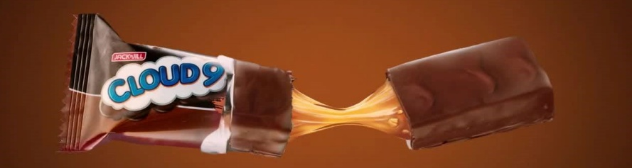
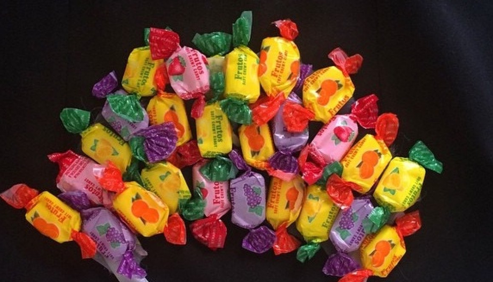
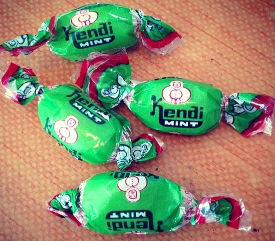
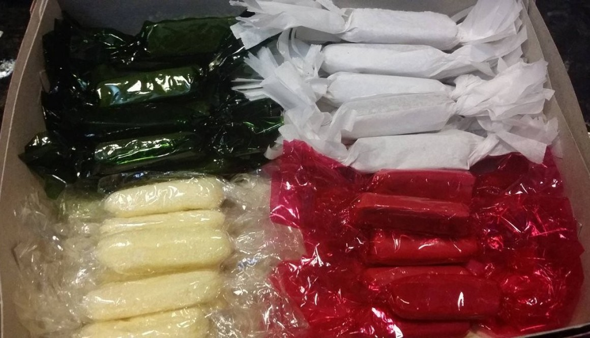
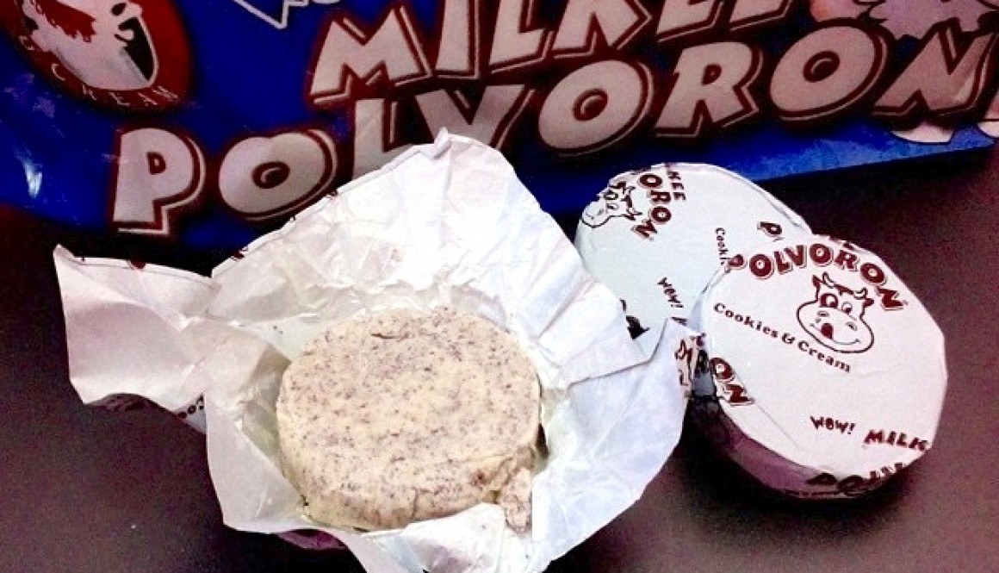

Monday-Sunday: 7:00 A.M-9:00 P.M
Banay, Sta. Cruz, Ilocos Sur
09356457325
| Name | Weight/volume | Description | Ingredients/Contents | Image |
|---|---|---|---|---|
| Flat Tops | 150 grams | Flat Tops is a milk chocolate candy that many Filipinos have fond childhood memories of. Created by the Philippine based company RICOA, who were also the first to create chocolate in the Philippines. This milk chocolate comes in the iconic brown and red-orange packaging, sold by 30s or 100s packs. | Milk Solids, Refined Sugar, Hydrogenated Vegetable Fat (Palm Oil, Palm Kernel Oil), Cocoa Powder, Emulsifiers (Soya Lecithin, E476), Iodized Salt, Vanillin and Cinnamon. | |
| Cloud 9 | 252 g, 800 g | Cloud 9 is a candy bar manufactured by Universal Robina Corporation in Manila, Philippines. It is described as “luscious caramel, crunchy peanuts, and soft nougat wrapped in rich chocolate.” | Glucose, Sugar, Peanuts, Hydrogenated Fat Animal (Fish Oil), Vegetable ( Soya, Palm). Antioxidant TBHQ, Skimmed Milk, Humectant (Sorbitol), fodized Salt, Egg Albumen, Emulsifier ( Soya Lecithin ). |  |
| White Rabbit | 227 grams | The White Rabbit brand of milk candy is not an original Filipino product but of Chinese origin, yet has been widely enjoyed in the Philippines for numerous decades. This “creamy candy” is white, with a soft, chewy texture, and is formed into cylinders approximately 3 cm long and 1 cm in diameter. The inner white wrapper is edible. | Maltose, White Granulated Sugar, Whole Milk Powder, Butter (Milk) (19%), Gelatin, Vanillin, Edible Glutinous Rice Paper (Edible Starch, Water, Food Additive (Glycerin Mono & Di-Stearate)). | |
| Frutos | 180 grams | Frutos is a favorite of kids who grew up with this candy. Launched in the late 80s, it came in the most colorful packaging with tropical flavors like mango, tamarind, lychee, and ponkan. It also came in classic fruity sweet flavors like grape, lemon, orange, and strawberry. | Sugar, Glucose, Vegetable Fat(Palm Kernel,Coconut), Gelatin, Citric Acid, Lecithin, Nature Identical & Artificial Food Flavors(Pineapple, Orange, Grape, Lemon, Strawberry), Artificial Food Colors(Tartrazine, Brilliant Scarlet 4R, Sunset Yellow, Allura Red, Brilliant Blue, Amaranth Red). |  |
| Haw Haw | 145 grams | Is a Sweet, creamy, and milky candy that melts in your mouth. Comes in a rectangular shape. A sweet and nostalgic treat, and popular in the Philippines. | Sugar, Whey Powder, Cocoa Powder, Glucose, And Artificial Chocolate Flavor. | |
| Ice candy | 200 grams | Ice Candy is a type of frozen refreshment ideal to beat the heat of summer. The two common varieties of Ice Candy are fruits and Chocolate. Almost any fruit can be used to make Ice Candy. | Water, Cornstarch, Cream or Evaporated Milk, Flavours, sugar, Condensed Milk | |
| Kendi | 230 grams | Kendi Mint candy is one of the classic hard candies from the Philippines, evoking nostalgic memories in Filipinos of all ages. Its in the same vintage group of Filipino candy that includes White Rabbit, Viva Caramel, and Tarzan bubble gum. In fact, White Rabbit, Viva Caramel and Kendi-Mint are all manufactured by the same Malabon-based company, which is Candyman Inc. | Sugar, Glucose Syrup, Peppermint Oil, Palm Oil, Cocoa powder, Soy Lecithin, Iodized Salt, Vanillin, Milk powder. |  |
| Pastillas | 133 grams | Pastillas, also known as pastillas de leche, are milk-based confections that originated in the town of San Miguel in Bulacan, Philippines. They are usually served as desserts. Pastillas-making spread to other Philippine provinces such as Cagayan and Masbate. Pastillas are made by reducing fresh milk with cornstarch until it is very thick. The name "pastillas" comes from the Spanish word for pills or tablets, while "leche" means milk. | Powdered Milk, condensed Milk, Sugar. |  |
| Polvoron | 60 grams, 300 grams | Polvoron is a Filipino-style shortbread made of toasted flour, powdered milk, sugar, and butter. Sweet, buttery, and easy to customize with different flavors, it's a delicious snack or dessert. Great for gift-giving. | Flour, Milk, Sugar, Nuts |  |
| Stay Fresh | 160 grams | Smooth, sweet and refreshing. Small green balls of mint flavor that you shoot from your mouth at a classmate when you are bored in school. Filipinos' version of tictac that's been here since the 70s. | Sugar, glucose syrup, menthol crystals, eucalyptus oil, peppermint oil , mineral oil, beeswax as glazing agent, Allergen | |